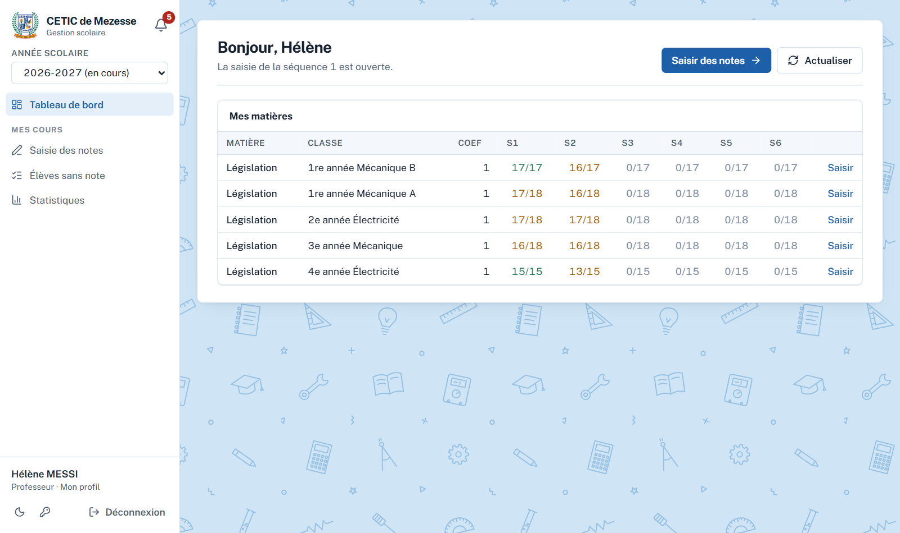
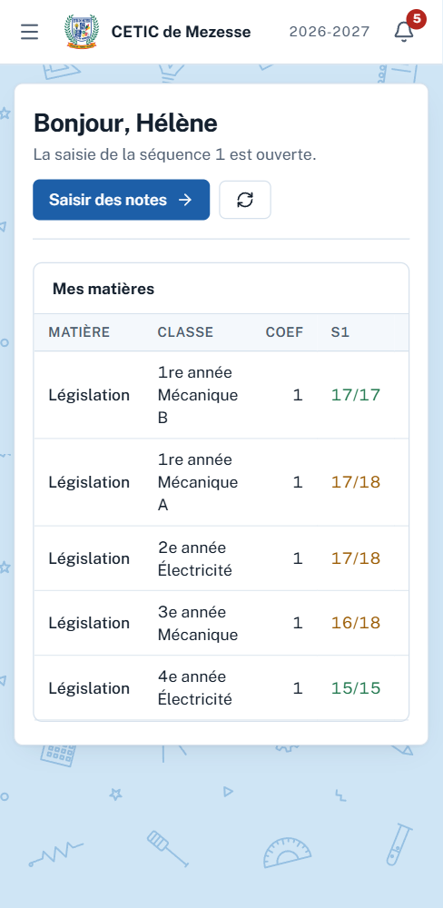
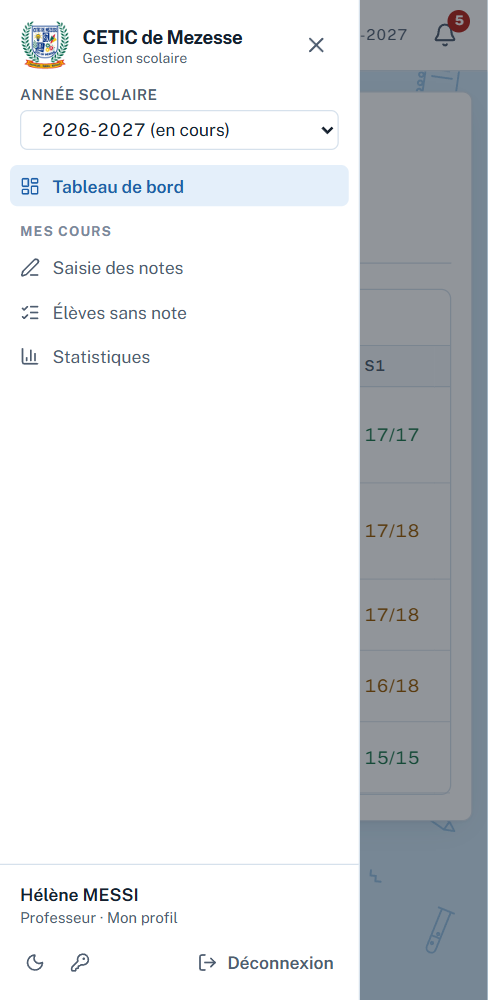
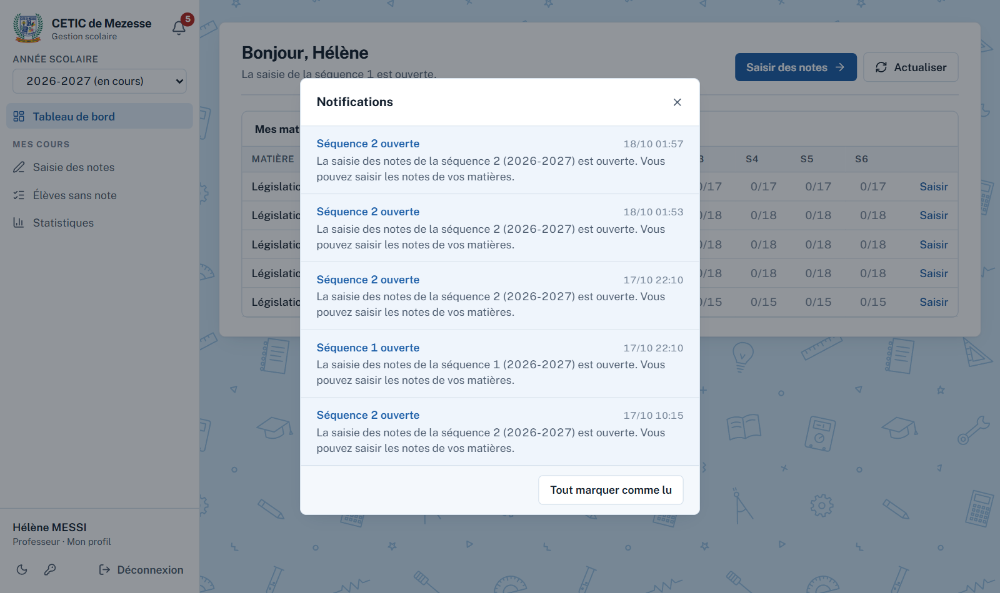
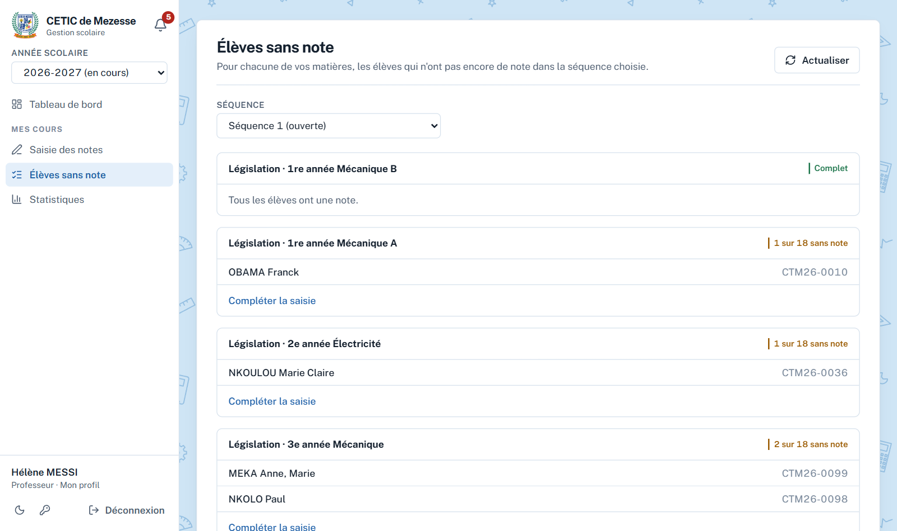
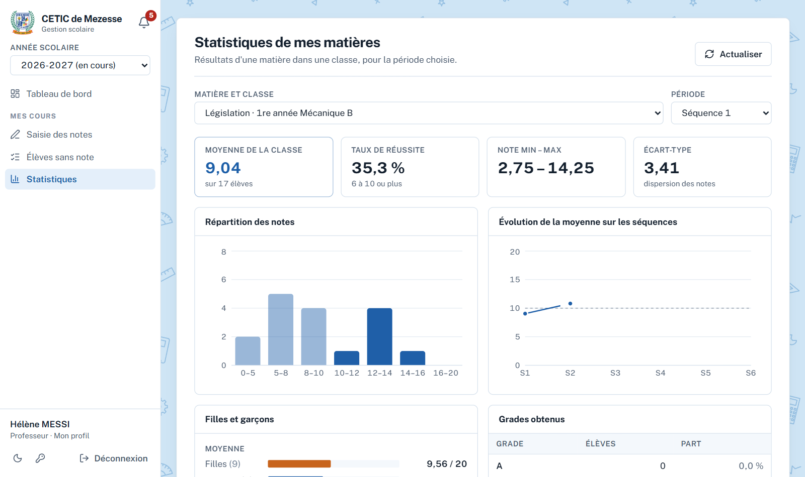

Saisir les notes de vos matières et la compétence visée, pendant une séquence ouverte.
Voir les élèves qui n'ont pas encore de note.
Consulter les statistiques de vos matières.
Modifier votre profil et votre mot de passe.
Le Surveillant Général crée votre compte, vous attribue vos matières et ouvre les séquences.
1. Se connecter
Ouvrez l'adresse de l'application dans un navigateur (Chrome, Firefox, Edge) ou lancez l'application mobile. Saisissez votre numéro de téléphone ou votre adresse e-mail, puis votre mot de passe. L'œil à droite du champ affiche le mot de passe tapé.
Figure 1 — Écran de connexion
1
Première connexion. Le mot de passe provisoire est password. L'application vous demande aussitôt d'en choisir un nouveau, de 8 caractères au moins.
2
Rester connecté. Cochée, la case garde la session sur l'appareil. Décochez-la sur un ordinateur partagé.
3
Mot de passe oublié. Le Surveillant Général le réinitialise : il redevient password, et vous en choisissez un nouveau à la connexion suivante.
Une session dure 12 heures. Au-delà, l'application vous demande de vous reconnecter.
2. Se repérer dans l'application
L'écran se compose d'un menu à gauche et d'une page au centre. Le tableau de bord rappelle la séquence ouverte et l'avancement de votre saisie, matière par matière.

Figure 2 — Tableau de bord du professeur
Année scolaire, en haut du menu : l'année consultée.
La cloche, à côté du nom de l'établissement : vos notifications, avec le nombre de non lues en rouge.
Mes cours : saisie des notes, élèves sans note, statistiques.
Votre nom, en bas du menu : votre profil. À côté : mode clair ou sombre, mot de passe, déconnexion.
Actualiser, en haut à droite de chaque page : recharge les données affichées sans recharger tout le site.

Figure 3 — Le site sur un téléphone

Figure 4 — Le menu, ouvert par les trois traits en haut à gauche
3. Mon profil et mon mot de passe
Touchez votre nom en bas du menu. Vous pouvez corriger votre prénom, votre nom, votre téléphone, votre e-mail et votre discipline.
Figure 5 — Mon profil
Le téléphone et l'e-mail servent à vous connecter : les changer demande votre mot de passe actuel. Il en faut au moins un, et il ne doit pas être déjà utilisé par un autre compte.
Changer mon mot de passe : mot de passe actuel, puis le nouveau deux fois. Un message rouge vous prévient si les deux ne correspondent pas.
Figure 6 — Changer mon mot de passe
4. Les notifications
Quand le Surveillant Général ouvre une séquence, vous recevez une notification « Séquence ouverte ». La cloche affiche alors un chiffre rouge. Touchez-la pour voir la liste ; touchez une notification pour aller directement à la saisie.

Figure 7 — Notifications
Les notifications sont relevées toutes les minutes. Tout marquer comme lu efface le chiffre rouge.
5. Saisir les notes
Figure 8 — Saisie des notes
1
Choisissez la matière et la classe, puis la séquence. Seules vos matières apparaissent. La séquence ouverte est indiquée « (ouverte) ».
2
Compétence visée. Écrivez la compétence travaillée pendant la séquence : elle s'imprime sur le bulletin, en face de la matière.
3
Les notes, sur 20, avec deux décimales au plus (virgule ou point). Passez d'un élève à l'autre avec la touche Entrée ou les flèches. Laissez la case vide pour un élève sans note : il apparaîtra dans « Élèves sans note ».
4
Enregistrer. Le bas de la feuille indique « Tout est enregistré » quand c'est fait. En haut, le nombre de notes saisies et la moyenne provisoire se mettent à jour.
Une séquence fermée est en lecture seule. Pour corriger une note après la fermeture, demandez au Surveillant Général de rouvrir la séquence.
6. Les élèves sans note
Pour la séquence choisie, la page liste, matière par matière, les élèves qui n'ont pas encore de note. Le lien Compléter la saisie ouvre directement la bonne feuille.

Figure 9 — Élèves sans note
Dans une matière évaluée, un élève sans note compte 0 dans les moyennes. Une matière où aucun élève n'a de note est considérée comme « non évaluée » pour la séquence.
7. Les statistiques de mes matières
Choisissez une matière et une période (séquence, trimestre ou année). La page affiche la moyenne de la classe, le taux de réussite (10 ou plus), les notes minimale et maximale, l'écart-type, la répartition des notes, l'évolution de la moyenne sur les séquences, la comparaison filles–garçons et les grades obtenus.

Figure 10 — Statistiques de mes matières
8. L'application mobile
L'application Android offre les mêmes écrans. Elle est distribuée par l'établissement sous forme de fichier APK ; Android peut demander d'autoriser l'installation depuis cette source.
Ouverture immédiate : votre session reprend sans attendre le serveur, avec les données gardées sur le téléphone, puis se met à jour.
Sans réseau : les écrans déjà ouverts restent consultables (un bandeau « Hors connexion » le signale). Les notes saisies sont gardées sur le téléphone, puis envoyées automatiquement au retour du réseau.
L'icône de nuage, en haut, compte les notes en attente d'envoi. Touchez-la pour les voir. Une note refusée par le serveur y reste signalée, elle n'est pas perdue.
Actualiser : l'icône ↻ en haut de l'écran, ou faites glisser la page vers le bas.
La version de l'application s'affiche en bas de l'écran de connexion et du menu.
Ne vous déconnectez pas tant que l'icône de nuage est affichée : les notes en attente partiraient à la prochaine connexion seulement.
9. Questions fréquentes
Question
Réponse
Une de mes matières n'apparaît pas.
Elle ne vous est pas attribuée. Le Surveillant Général l'attribue dans la page Matières.
Je ne peux pas modifier les notes.
La séquence est fermée. Demandez au Surveillant Général de la rouvrir.
Un élève manque dans la liste.
Il n'est pas inscrit dans la classe, ou il a été renvoyé. Voyez avec le Surveillant Général.
J'ai oublié mon mot de passe.
Le Surveillant Général le réinitialise ; vous en choisirez un nouveau à la connexion.
J'ai besoin d'une attestation de présence effective au poste.
Demandez-la au Directeur. Elle reprend votre matricule, votre grade, votre fonction et votre date de prise de service : signalez-lui toute correction.
Je suis professeur principal : que dois-je signer ?
Les certificats du tableau d'honneur de votre classe portent votre nom ; vous les signez avec le Directeur.
La page ne montre pas les dernières données.
Cliquez Actualiser en haut à droite de la page.
Sur le téléphone, mes notes n'apparaissent pas sur le site.
Elles attendent peut-être le réseau : regardez l'icône de nuage en haut de l'application.